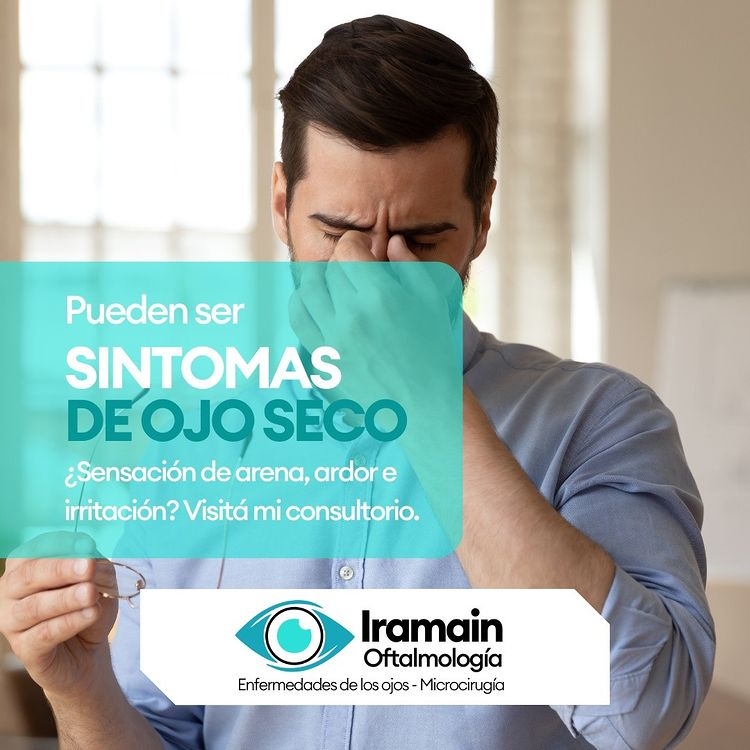

Autokeratorefractometro Computarizado
Se utiliza para la medición precisa del defecto visual de cada paciente.

Salud visual
El chequeo en consultorio con tu médico oftalmólogo es la única manera de prevenir o detectar en una fase temprana cualquier enfermedad que pueda comprometer el estado de la visión y la salud de tus ojos.

Autokeratorefractometro Computarizado
Se utiliza para la medición precisa del defecto visual de cada paciente.